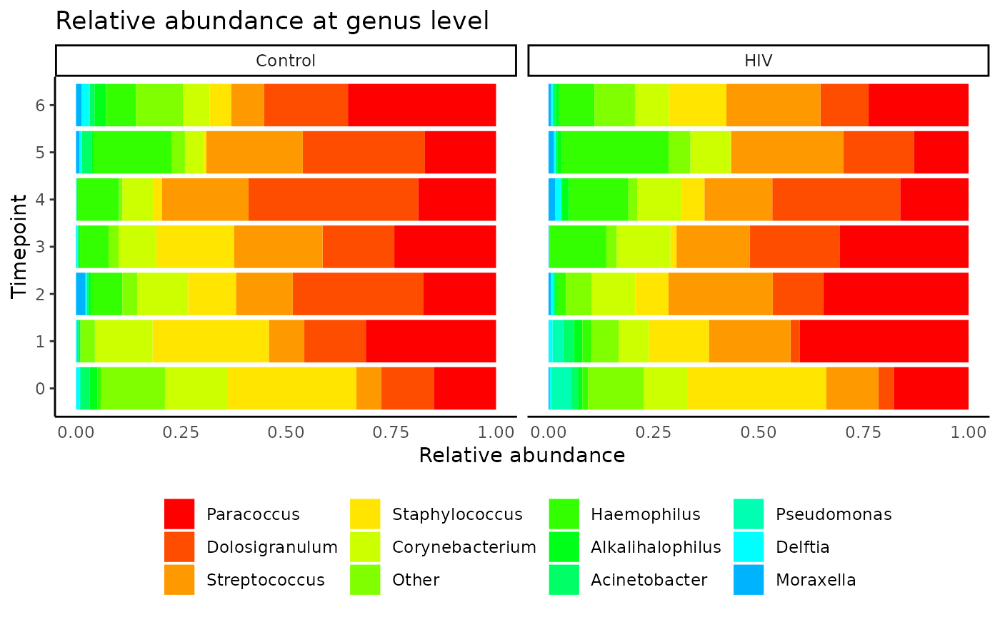

Introduction to LegATo
Aubrey R. Odom
Program in Bioinformatics, Boston University, Boston, MAaodom@bu.edu
January 25, 2024
LegATo_vignette.RmdIntroduction to LegATo: Longitudinal mEtaGenomic Analysis TOolkit
Streamlining longitudinal microbiome profiling in Bioconductor
LegATo is a suite of open-source software tools for longitudinal microbiome analysis that is extendable to several different study forms with optimal ease-of-use for researchers. Microbiome time-series data presents distinct challenges including complex covariate dependencies and variety of longitudinal study designs. This toolkit will allow researchers to determine which microbial taxa are affected over time by perturbations such as onset of disease or lifestyle choices, and to predict the effects of these perturbations over time, including changes in composition or stability of commensal bacteria.
LegATo integrates visualization, modeling and testing procedures. It will be supplemented by hierarchical clustering tools and multivariate generalized estimating equations (JGEEs) to adjust for the compositional nature of microbiome data.
Setup
library(LegATo)Data
We will be utilizing nasopharyngeal microbiome data from Zambian Infants from Odom et al.:
dat <- system.file("extdata", "MAE.RDS", package = "LegATo") |>
readRDS()
dat_0.05 <- filter_animalcules_MAE(dat, 0.05)
parsed <- parse_MAE_SE(dat, which_assay = "MicrobeGenetics", type = "MAE")
alluvial_df <- get_long_data(dat_0.05, "genus")## Registered S3 method overwritten by 'httr':
## method from
## print.response rmutil
group_vars <- c("HIVStatus", "MothChild")
get_summary_table(dat_0.05, group_vars)## HIVStatus MothChild mean_reads sd_reads min_reads max_reads num_total
## 1 Control Infant 156209.16 408000.52 24176 3016276 68
## 2 Control Mother 68648.79 50526.74 14339 168157 19
## 3 HIV Infant 90008.20 51395.08 13218 202079 61
## 4 HIV Mother 72277.53 48180.28 20118 208029 19
best_genus <- get_top_taxa(dat_0.05, "genus")
best_species <- get_top_taxa(dat_0.05, "species")
this_palette <- rainbow(20)
plot_stacked_area(dat_0.05, "genus",
"HIVStatus",
"timepoint",
palette_input = this_palette)
plot_stacked_bar(dat_0.05, "genus",
"HIVStatus",
"timepoint",
palette_input = this_palette)
plot_alluvial(dat = dat_0.05,
taxon_level = "genus",
covariate_1 = "HIVStatus",
covariate_time = "timepoint",
palette_input = this_palette,
subtitle = "Alluvial plot")
plot_spaghetti(dat = dat_0.05,
covariate_time = "timepoint",
covariate_1 = "HIVStatus",
unit_var = "Subject",
taxon_level = "genus",
which_taxon = "Corynebacterium",
palette_input= this_palette,
title = "Spaghetti Plot",
subtitle = NULL) +
ggplot2::xlab("Infant Age (Days)") +
ggplot2::ylab("Relative Abundance (log CPM)")
GEE Modeling
output <- run_gee_model(dat, unit_var = "Subject",
fixed_cov = c("HIVStatus", "MothChild", "Age"),
corstr = "ar1",
plot_out = FALSE,
plotsave_loc = ".",
plot_terms = NULL)
head(output)## Coefficient Coefficient Estimate Standard Error Statistic Unadj p-value
## 1 (Intercept) 47024.4796 39794.316 1.3963874 0.23732938
## 2 (Intercept) 2070.1721 3238.258 0.4086862 0.52263712
## 3 (Intercept) 9530.8640 5106.186 3.4839455 0.06196683
## 4 (Intercept) 61209.2478 25927.329 5.5733783 0.01823554
## 5 (Intercept) 47416.3910 20515.628 5.3417968 0.02082000
## 6 (Intercept) -701.1414 1529.727 0.2100794 0.64670520
## Lower 95% CI Upper 95% CI Taxon Adj p-value
## 1 -30970.9456 125019.905 Dolosigranulum 0.4669326
## 2 -4276.6975 8417.042 Streptococcus 0.6148113
## 3 -477.0759 19538.804 Moraxella 0.4669326
## 4 10392.6166 112025.879 Staphylococcus 0.4669326
## 5 7206.4993 87626.283 Corynebacterium 0.4669326
## 6 -3699.3512 2297.068 Haemophilus 0.7164696
# Trying out plotting
#run_gee_model(dat, unit_var = "Subject",
# taxon_level = "genus",
# fixed_cov = c("MothChild", "HIVStatus", "Age"),
# corstr = "ar1",
# plot_out = TRUE,
# plotsave_loc = #"/restricted/projectnb/infant-microbiome/work/aodom",
# plot_terms = "MothChild",
# width = 6, height = 4, units = "in", scale = 0.7)
#Add hotelling
test_hotelling_t2(dat = dat_0.05,
test_index = which(dat_0.05$MothChild == "Infant" &
dat_0.05$timepoint == 6),
taxon_level = "genus",
# To avoid n < p, use top 5-6 species
num_taxa = 6,
paired = TRUE,
grouping_var = "HIVStatus",
pairing_var = "pairing")## $df1
## [1] 6
##
## $df2
## [1] 2
##
## $crit_F
## [1] 19.32953
##
## $F_stat
## [1] 2.578132
##
## $pvalue
## [1] 0.3056466
test_hotelling_t2(dat = dat_0.05,
test_index = which(dat_0.05$MothChild == "Mother" &
dat_0.05$timepoint == 0),
taxon_level = "genus",
# To avoid n < p, use top 5-6 species
num_taxa = 12,
grouping_var = "HIVStatus",
unit_var = "Subject",
paired = FALSE)## $df1
## [1] 12
##
## $df2
## [1] 7
##
## $crit_F
## [1] 3.574676
##
## $F_stat
## [1] 0.4781539
##
## $pvalue
## [1] 0.875078## R version 4.3.1 (2023-06-16)
## Platform: x86_64-pc-linux-gnu (64-bit)
## Running under: AlmaLinux 8.9 (Midnight Oncilla)
##
## Matrix products: default
## BLAS: /share/pkg.8/r/4.3.1/install/lib64/R/lib/libRblas.so
## LAPACK: /share/pkg.8/r/4.3.1/install/lib64/R/lib/libRlapack.so; LAPACK version 3.11.0
##
## locale:
## [1] LC_CTYPE=en_US.UTF-8 LC_NUMERIC=C
## [3] LC_TIME=en_US.UTF-8 LC_COLLATE=en_US.UTF-8
## [5] LC_MONETARY=en_US.UTF-8 LC_MESSAGES=en_US.UTF-8
## [7] LC_PAPER=en_US.UTF-8 LC_NAME=C
## [9] LC_ADDRESS=C LC_TELEPHONE=C
## [11] LC_MEASUREMENT=en_US.UTF-8 LC_IDENTIFICATION=C
##
## time zone: America/New_York
## tzcode source: system (glibc)
##
## attached base packages:
## [1] stats graphics grDevices utils datasets methods base
##
## other attached packages:
## [1] LegATo_0.99.0 BiocStyle_2.28.0
##
## loaded via a namespace (and not attached):
## [1] rstudioapi_0.15.0 jsonlite_1.8.8
## [3] umap_0.2.10.0 MultiAssayExperiment_1.28.0
## [5] magrittr_2.0.3 farver_2.1.1
## [7] rmarkdown_2.25 geepack_1.3.9
## [9] fs_1.6.3 zlibbioc_1.48.0
## [11] ragg_1.2.5 vctrs_0.6.5
## [13] memoise_2.0.1 RCurl_1.98-1.14
## [15] askpass_1.2.0 BiocBaseUtils_1.4.0
## [17] htmltools_0.5.7 S4Arrays_1.2.0
## [19] broom_1.0.5 SparseArray_1.2.3
## [21] sass_0.4.8 TBSignatureProfiler_1.15.0
## [23] bslib_0.6.1 htmlwidgets_1.6.4
## [25] desc_1.4.3 plyr_1.8.9
## [27] covr_3.6.2 plotly_4.10.2
## [29] cachem_1.0.8 lifecycle_1.0.4
## [31] iterators_1.0.14 pkgconfig_2.0.3
## [33] Matrix_1.6-5 R6_2.5.1
## [35] fastmap_1.1.1 GenomeInfoDbData_1.2.11
## [37] MatrixGenerics_1.14.0 clue_0.3-65
## [39] digest_0.6.34 colorspace_2.1-0
## [41] spatial_7.3-16 S4Vectors_0.40.2
## [43] DESeq2_1.40.1 RSpectra_0.16-1
## [45] textshaping_0.3.6 GenomicRanges_1.54.1
## [47] vegan_2.6-4 labeling_0.4.3
## [49] fansi_1.0.6 httr_1.4.7
## [51] abind_1.4-5 mgcv_1.8-42
## [53] compiler_4.3.1 withr_3.0.0
## [55] backports_1.4.1 inline_0.3.19
## [57] BiocParallel_1.36.0 highr_0.10
## [59] MASS_7.3-60 tsne_0.1-3.1
## [61] openssl_2.1.1 DelayedArray_0.28.0
## [63] fBasics_4022.94.9000 permute_0.9-7
## [65] tools_4.3.1 ape_5.7-1
## [67] rentrez_1.2.3 glue_1.7.0
## [69] stabledist_0.7-1 nlme_3.1-162
## [71] grid_4.3.1 cluster_2.1.4
## [73] reshape2_1.4.4 generics_0.1.3
## [75] gtable_0.3.4 tidyr_1.3.0
## [77] data.table_1.14.10 utf8_1.2.4
## [79] XVector_0.42.0 rmutil_1.1.10
## [81] BiocGenerics_0.48.1 ggrepel_0.9.3
## [83] foreach_1.5.2 pillar_1.9.0
## [85] stringr_1.5.1 limma_3.56.2
## [87] splines_4.3.1 dplyr_1.1.4
## [89] lattice_0.21-8 GUniFrac_1.8
## [91] tidyselect_1.2.0 locfit_1.5-9.8
## [93] knitr_1.45 bookdown_0.34
## [95] IRanges_2.36.0 edgeR_3.42.4
## [97] SummarizedExperiment_1.32.0 stats4_4.3.1
## [99] xfun_0.41 Biobase_2.62.0
## [101] statmod_1.5.0 timeDate_4032.109
## [103] matrixStats_1.2.0 DT_0.28
## [105] rex_1.2.1 stringi_1.8.3
## [107] lazyeval_0.2.2 yaml_2.3.8
## [109] evaluate_0.23 codetools_0.2-19
## [111] timeSeries_4030.106.9000 tibble_3.2.1
## [113] BiocManager_1.30.22 cli_3.6.2
## [115] rpart_4.1.19 reticulate_1.30
## [117] systemfonts_1.0.4 munsell_0.5.0
## [119] jquerylib_0.1.4 Rcpp_1.0.12
## [121] GenomeInfoDb_1.38.5 stable_1.1.6
## [123] png_0.1-8 XML_3.99-0.16
## [125] parallel_4.3.1 modeest_2.4.0
## [127] ellipsis_0.3.2 pkgdown_2.0.7
## [129] ggplot2_3.4.4 assertthat_0.2.1
## [131] animalcules_1.18.2 ggalluvial_0.12.5
## [133] bitops_1.0-7 viridisLite_0.4.2
## [135] scales_1.3.0 statip_0.2.3
## [137] purrr_1.0.2 crayon_1.5.2
## [139] rlang_1.1.3 shinyjs_2.1.0